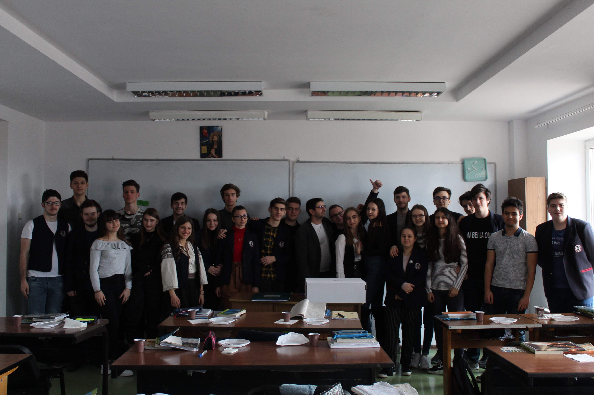
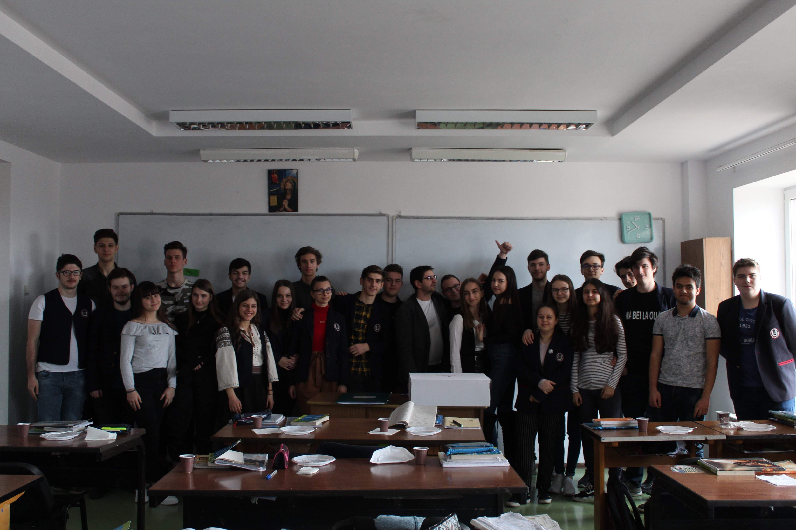
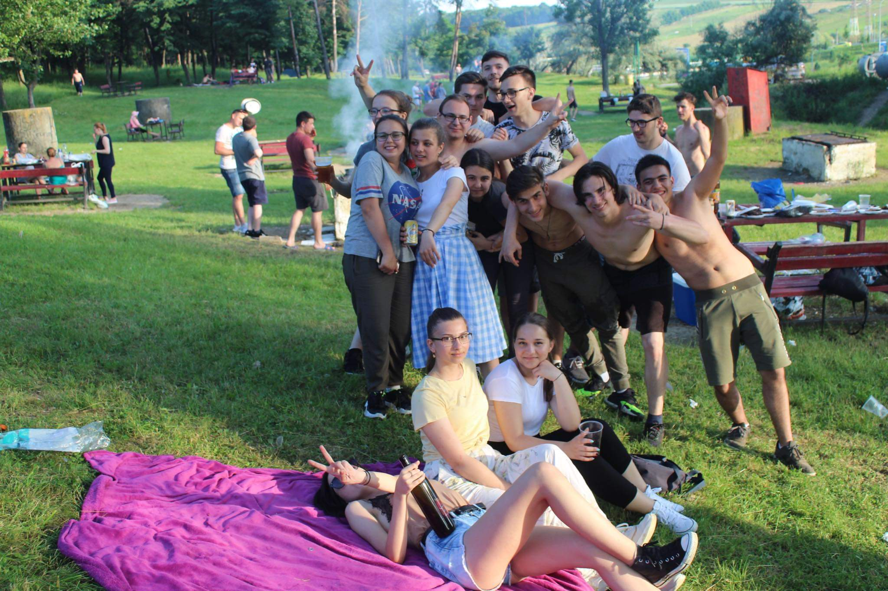
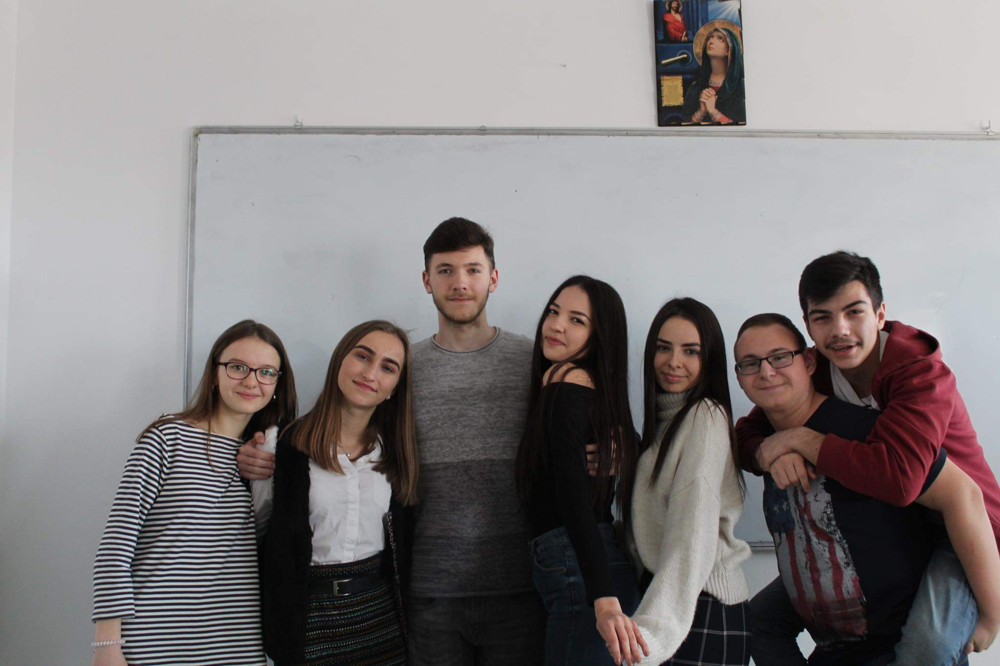
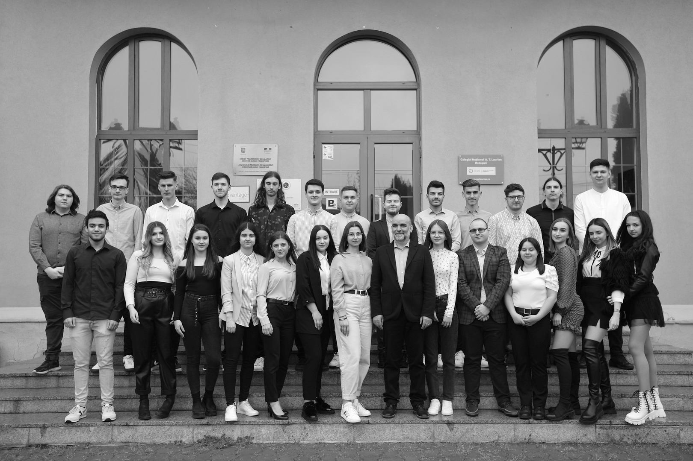
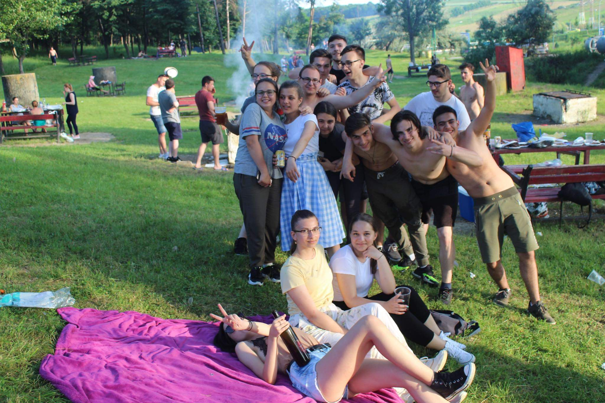
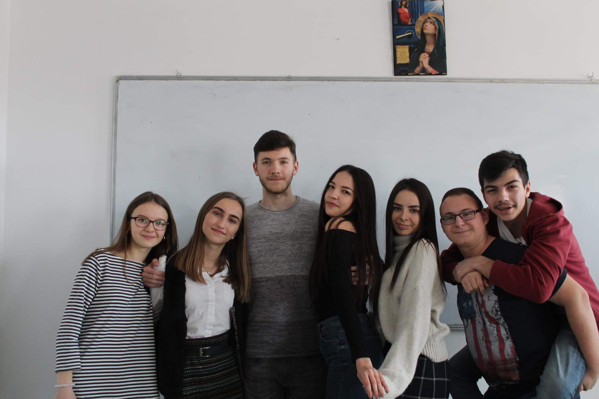
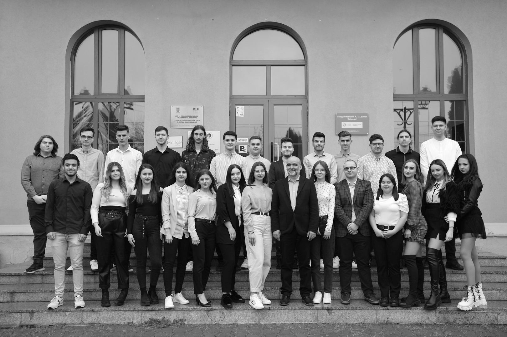

Colegiul Naţional 'A.T.LAURIAN' (C.N.A.T.L.) este o instituţie cu tradiţie a învăţământului, cu o istorie de 150 de ani, care pune la dispoziţia elevilor un corp profesoral competent: 6 profesori doctor, 50 de profesori cu gradul I. Cursuri de zi cu profil uman (filologie, ştiinţe sociale) şi cu profil real (matematică-informatică şi ştiinţe ale naturii), bilingve şi intensive: engleză, franceză, informatică. Colectivul scolii a fost minunat, dar și al clasei. Am făcut multe activități împreună cu celelalte clase. În clasa am fost 22 elevi, ne-am înteles bine. Dacă ar fi să aleg din nou să mă înscriu la liceu nu as mai opta CNATL!
 



 




